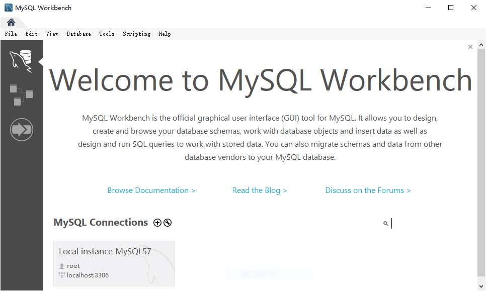
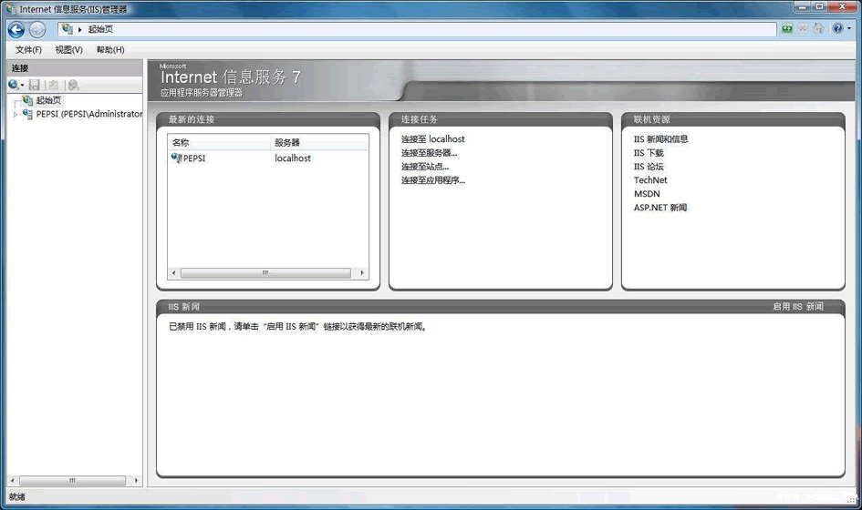
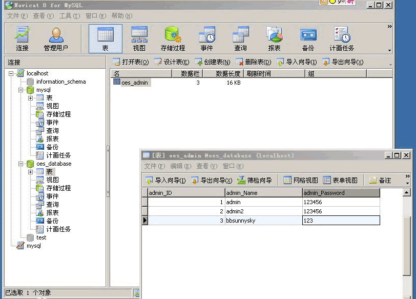
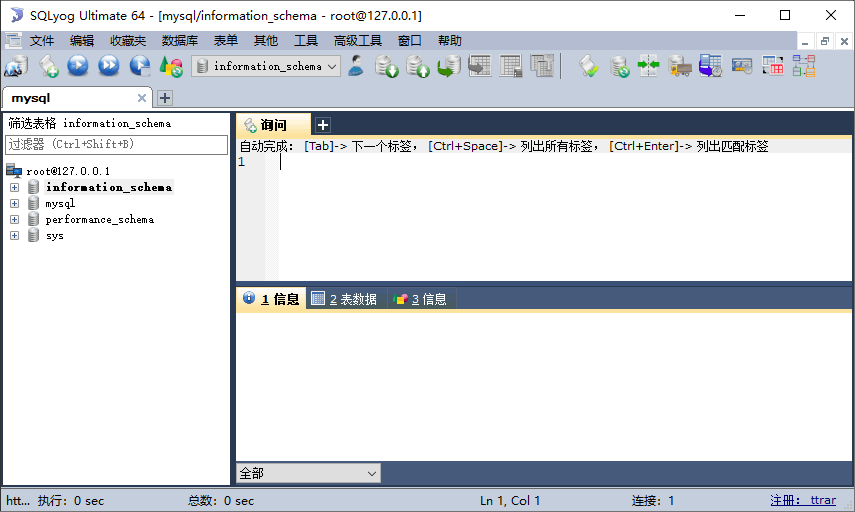

首页 > MySQL教程 > MySQL的安装和配置
MySQL常用图形化管理工具
MySQL 服务器正确安装以后，可以通过命令行管理工具或者图形化的管理工具来操作 MySQL 数据库。
MySQL 图形化管理工具极大地方便了数据库的操作与管理，除了系统自带的命令行管理工具之外，常用的图形化管理工具还有 MySQL Workbench、phpMyAdmin、Navicat、MySQLDumper、SQLyog、MySQL ODBC Connector。
其中 phpMyAdmin 和 Navicat 提供中文操作界面，MySQL Workbench、MySQL ODBC Connector、MySQLDumper 为英文界面。下面介绍几个常用的图形管理工具。
下载地址：http://dev.MySQL.com/downloads/workbench/。
下载地址：https://www.phpmyadmin.net/。
下载地址：http://www.avicat.com/。
下载地址：http://www.webyog.com/en/index.php，读者也可以搜索中文版的下载地址。
MySQL 图形化管理工具极大地方便了数据库的操作与管理，除了系统自带的命令行管理工具之外，常用的图形化管理工具还有 MySQL Workbench、phpMyAdmin、Navicat、MySQLDumper、SQLyog、MySQL ODBC Connector。
其中 phpMyAdmin 和 Navicat 提供中文操作界面，MySQL Workbench、MySQL ODBC Connector、MySQLDumper 为英文界面。下面介绍几个常用的图形管理工具。
1）MySQL Workbench
MySQL Workbench MySQL 是官方提供的图形化管理工具，分为社区版和商业版，社区版完全免费，而商业版则是按年收费。支持数据库的创建、设计、迁移、备份、导出和导入等功能，并且支持 Windows、Linux 和 mac 等主流操作系统。下载地址：http://dev.MySQL.com/downloads/workbench/。

2）phpMyAdmin
phpMyAdmin 是最常用的 MySQL 维护工具，使用 PHP 编写，通过 Web 方式控制和操作 MySQL 数据库，是 Windows 中 PHP 开发软件的标配。通过 phpMyAdmin 可以完全对数据库进行操作，例如建立、复制、删除数据等。管理数据库非常方便，并支持中文，不足之处在于对大数据库的备份和恢复不方便，对于数据量大的操作容易导致页面请求超时。下载地址：https://www.phpmyadmin.net/。

3）Navicat
Navicat MySQL 是一个强大的 MySQL 数据库服务器管理和开发工具。它可以与任何版本的 MySQL 一起工作，支持触发器、存储过程、函数、事件、视图、管理用户等。对于新手来说也易学易用。Navicat 使用图形化的用户界面（GUI），可以让用户用一种安全简便的方式来快速方便地创建、组织、访问和共享信息。Navicat 支持中文，有免费版本提供。下载地址：http://www.avicat.com/。

4）SQLyog
SQLyog 是一款简洁高效、功能强大的图形化管理工具。SQLyog 操作简单，功能强大，能够帮助用户轻松管理自己的 MySQL 数据库。SQLyog 中文版支持多种数据格式导出，可以快速帮助用户备份和恢复数据，还能够快速地运行 SQL 脚本文件，为用户的使用提供便捷。使用 SQLyog 可以快速直观地让用户从世界的任何角落通过网络来维护远端的 MySQL 数据库。下载地址：http://www.webyog.com/en/index.php，读者也可以搜索中文版的下载地址。

5）MySQLDumper
MySQLDumper 使用基于 PHP 开发的 MySQL 数据库备份恢复程序，解决了使用 PHP 进行大数据库备份和恢复的问题。数百兆的数据库都可以方便地备份恢复，不用担心网速太慢而导致中断的问题，非常方便易用。（暂无官方下载链接）关注公众号「站长严长生」，在手机上阅读所有教程，随时随地都能学习。内含一款搜索神器，免费下载全网书籍和视频。

微信扫码关注公众号